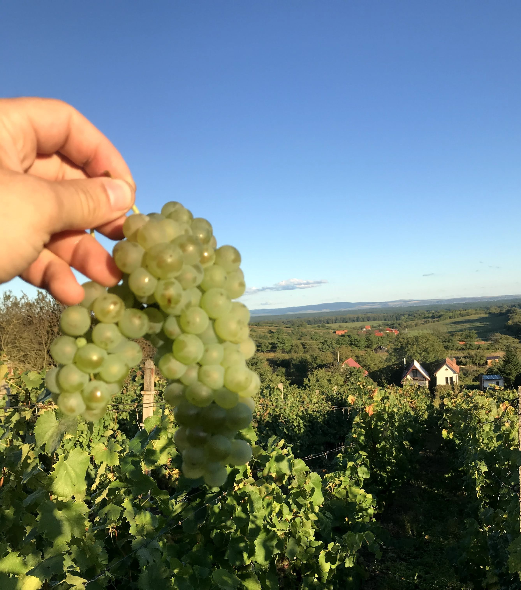

Malé vinařství · jižní Morava · poctivé řemeslo
Procházet vína
Poctivá vína z vinohradů pod Dubňanskou horou
Testovací verze webu už obsahuje ukázková vína i dočasné obrázky, takže můžeš hned vyzkoušet košík, formulář i WhatsApp objednávku.
Objednávka přes WhatsApp
Možnost osobního odběru
QR potvrzení platby od vinaře

O vinařství
Malé vinařství s láskou k řemeslu i krajině
Jsme malé vinařství pod Dubňanskou horou nedaleko Mutěnic, založené lidmi ze severu Čech, kteří si zamilovali moravské vinohrady i poctivé řemeslo.
Naším cílem je přenést do každé lahve slunce jižní Moravy, čistý projev odrůdy a radost z dobře odvedené práce.
Nabídka
Ukázková vína pro testování
Kontakt
Objednávky a osobní odběr
Vinař: Ivo Devátý
Telefon / WhatsApp: 724 366 369
E-mail: ivo.devaty@email.cz
Instagram: @ivo_winzer
Adresa sklípku pro osobní odběr: Pod Dubňansků horů 1213, 696 11 Mutěnice
Pokud zákazník zvolí osobní odběr, víno si může vyzvednout právě na této adrese sklípku.
IČO: Doplňte IČO
Jak probíhá objednávka
- Zákazník vybere vína do košíku a vyplní objednávkový formulář.
- Web připraví WhatsApp zprávu, ve které bude uvedeno kolik a jakých vín zákazník objednává, plus adresa pro zaslání nebo informace o osobním odběru ve sklípku.
- Na telefonu zákazník klikne na tlačítko Otevřít WhatsApp s objednávkou. Pokud objednává na počítači, může naskenovat QR kód telefonem.
- V aplikaci WhatsApp se otevře předvyplněná objednávka a zákazník ji jen odešle vinaři.
- Jakmile vinař objednávku uvidí, potvrdí ji zpět přes WhatsApp a pošle QR kód pro platbu na účet. Tím se objednávka potvrzuje.